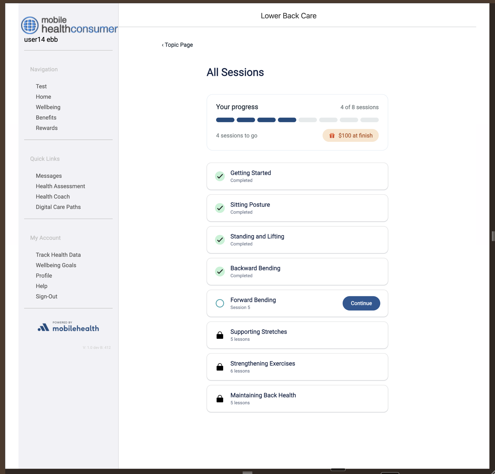
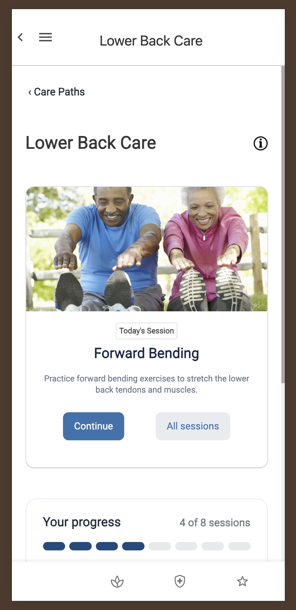
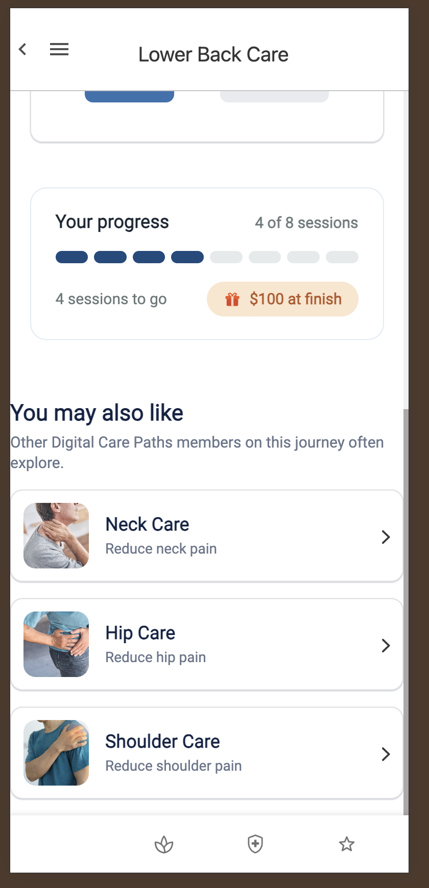
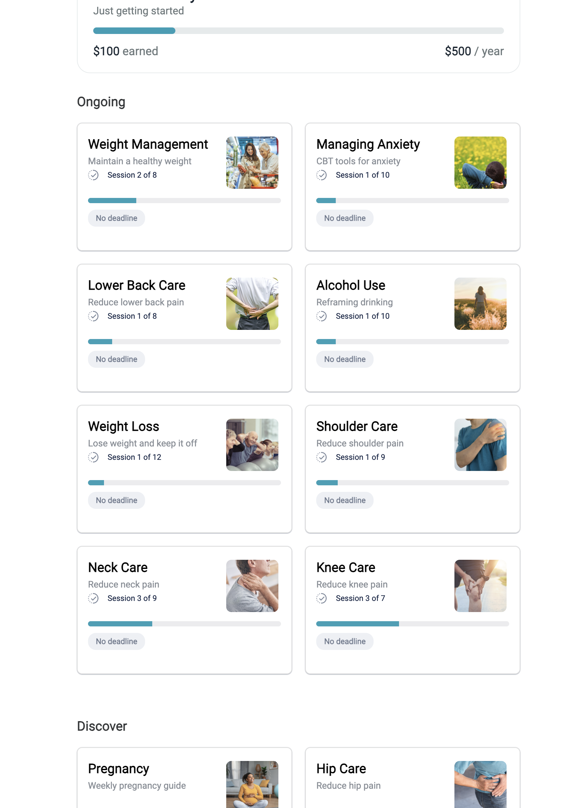
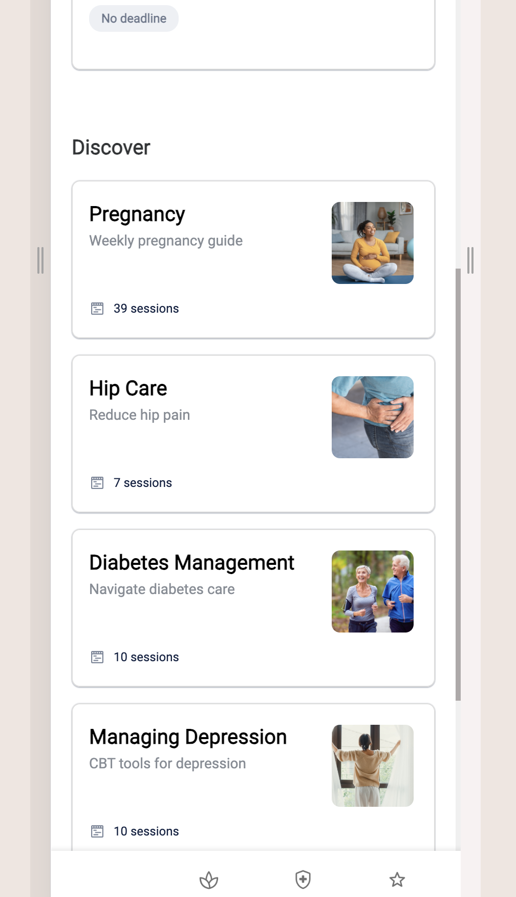
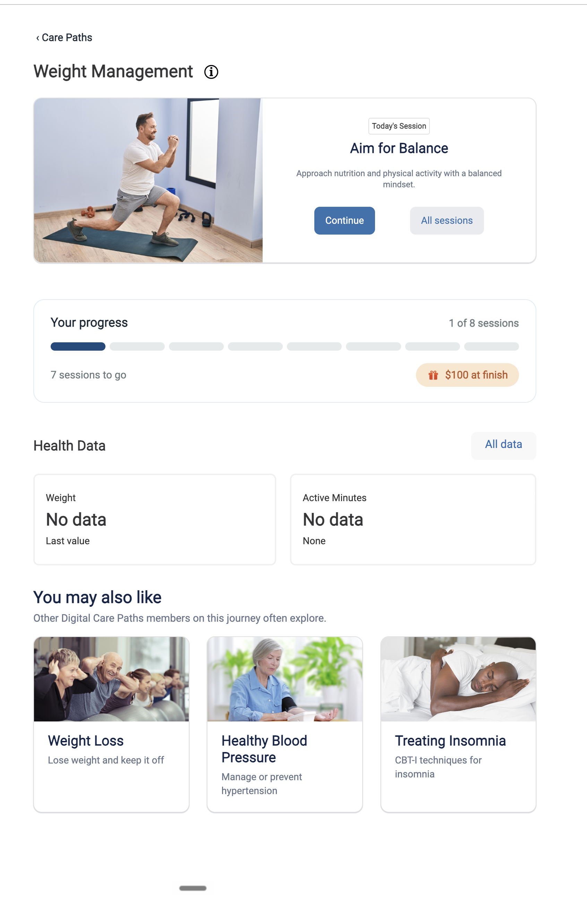
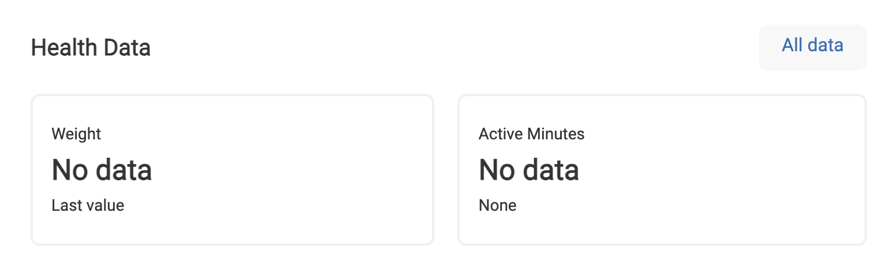
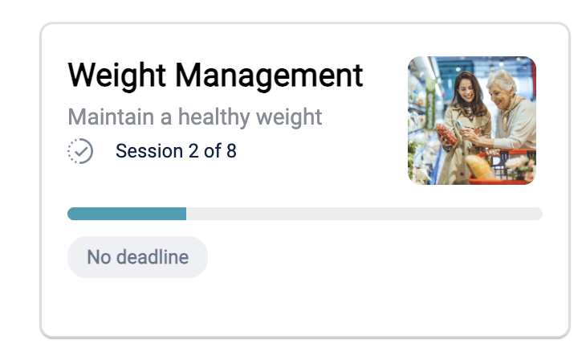

EBB · Design guidance · annotated review
Guidance marked directly on the screens. The rules below are global — they apply to every DCP page. New screens are added as blocks as they come in.
All Sessions · Lower Back Care
Sessions list (legacy side-nav layout)

1 2 3 3Content is stuck narrow with a large empty gutter on the right. Widen the container to use the space.
Gap under "All Sessions" is too generous.
The progress container uses a drop shadow; list items use a stroke. Match them.
Use stroke — retire the drop shadowTopic (Care Path) page · Lower Back Care
Mobile — top of page & scrolled

1 2 3
4 5 6Breadcrumbs are desktop only. On mobile the bottom nav + the top-nav back arrow already cover "back," so "‹ Care Paths" shouldn't appear here. Desktop: keep it, with breadcrumb→title spacing ≥ 32dp.
Per the Figma hero example: a horizontal row, 8dp between, both buttons fill equally. Right now they're unequal and loosely spaced.
Open question (for dev): are these buttons a shared layout component or one-off markup? That determines how much control we have. Target = equal-width + 8dp regardless.Applies to every gap between stacked cards on the page.
This section (title + cards) is flush to the edge and out of line with the rest of the page. Align it to the same container edges as everything above.
Same global rule: consistent stroke, not drop shadow.
Confirmed preference: strokeDigital Care list · Ongoing & Discover
Section-header spacing

1 2
This is the standard gap above a section header — match everything to it.
There's more space above "Discover" than above "Ongoing." Reduce it so every section header has the same top spacing.
Topic home · Weight Management (desktop)
Breadcrumb reference · section titles · spacing · button alignment

1 5 4 3
2 3The spacing here is correct. Use this page as the reference for all desktop pages with breadcrumbs. (Mobile has no breadcrumb.)
The text isn't vertically centered — there's extra space below it. Center the label in the button.
"Health Data" and "You may also like" should share one title class: H6, ~20dp mobile / 25dp desktop.
Consistent gap under a section title: 20dp mobile, 24dp desktop.
40dp of space above the progress container and between it and its neighbors.
Card · internal padding
Weight Management (ongoing card)

1 2Space from the card edge to the title.
The bottom padding is larger than the top. Make them equal — one consistent padding value on all sides. 16 mobile / 24 desktop.
Send the next screen and it drops in as a new block. — Grounded in consistency (Nielsen), alignment, and spacing discipline.